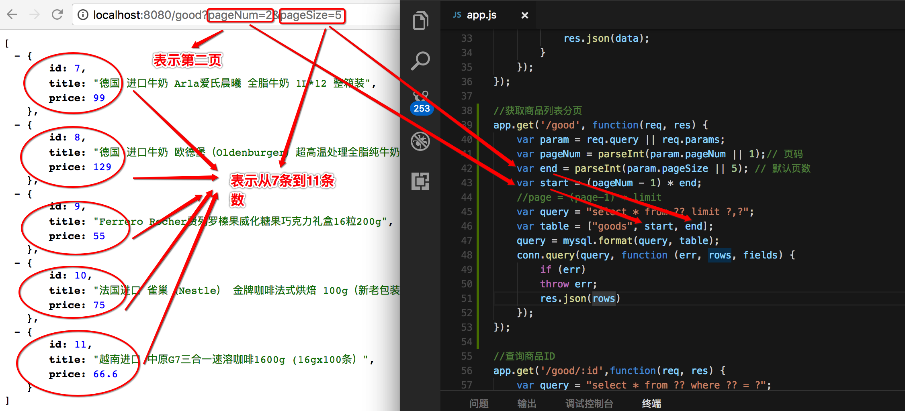
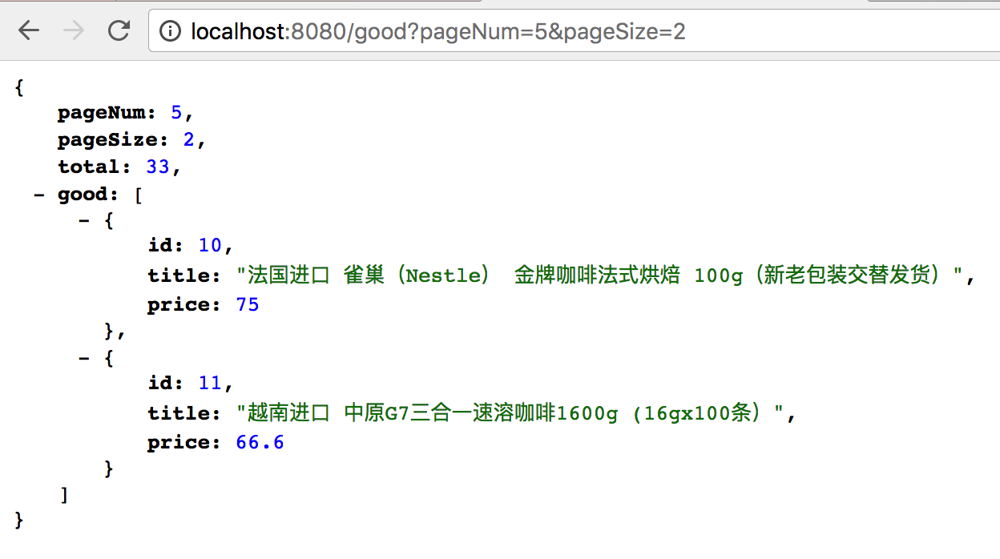

node + mysql分页
|本篇文章主要介绍了nodejs+mysql实现分页的方法,这个比较适合新手学习。我们平常看到后台或者前台常用的分页，是比较重要的功能。
用limit方法查询，取前5条数据
select * from goods limit 0,5
或者
select * from goods limit 5
取前5条数据的图片
查询第12到第16条数据
select * from goods limit 10,5
查询第12到第16条数据的图片
我们开始写REST API的分页接口
//获取商品列表分页
app.get('/good', function(req, res) {
var param = req.query || req.params;
var pageNum = parseInt(param.pageNum || 1);// 页码
var end = parseInt(param.pageSize || 5); // 默认页数
var start = (pageNum - 1) * end;
//page = (page-1) * limit
var query = "select * from ?? limit ?,?";
var table = ["goods", start, end];
query = mysql.format(query, table);
conn.query(query, function (err, rows, fields) {
if (err)
throw err;
res.json(rows)
});
});
查询分页图片

增加商品总数量
var sql = "SELECT count(*) as total FROM goods";
conn.query(sql, function (err,results) {
total = results[0].total;
console.log('number of pages:', total);
})
完整项目：
//获取商品列表分页
app.get('/good', function(req, res) {
var param = req.query || req.params;
var pageNum = parseInt(param.pageNum || 1);// 页码
var end = parseInt(param.pageSize || 3); // 默认页数
var start = (pageNum - 1) * end;
var sql = "SELECT count(*) as total FROM goods";
conn.query(sql, function (err,results) {
total = results[0].total;
console.log('number of pages:', total);
})
var query = "select * from ?? limit ?,?";
var table = ["goods", start, end];
query = mysql.format(query, table);
conn.query(query, function (err, rows, fields) {
if (err)
throw err;
res.json({
pageNum: pageNum,
pageSize: end,
total: total,
good:rows
})
});
});
请求GET中，商品分页效果
